In China Employee Termination: Pulse Control-Tower v3 Brief for Foreign Employers (2026 Testing Run)
Key takeaways
- A control-tower telemetry model helps foreign employers monitor China termination quality in real time.
- Legal route clarity is the first condition; evidence integrity, communication coherence, and settlement certainty are equal execution conditions.
- Most costly disputes reflect control decay, not lack of legal awareness.
- Payroll and IIT treatment should appear on the main dashboard, not in back-office notes.
- Executives need threshold-triggered escalation, not narrative status updates.
Pulse lead
Foreign companies rarely fail because they have no policy. They fail because the case drifts after policy is set: route language changes across teams, records are patched late, or payout assumptions shift before execution. A control tower prevents that drift by forcing measurable checkpoints and fast escalation.
This run uses a decision telemetry structure so senior non-China stakeholders can see risk movement clearly and intervene early.
Plain-language legal context first
China’s Labor Contract Law sets the legal route perimeter. Implementation regulations and SPC judicial interpretation shape real dispute review standards. Practical meaning for foreign employers: a legally arguable route is not enough unless process fairness, evidence quality, and settlement behavior stay aligned.
Control-tower telemetry board
Metric 1: Route stability index
- Measures consistency of legal route language across HR, legal, manager, and notice package.
- Trigger: any contradiction pushes immediate legal recalibration.
Metric 2: Evidence reliability score
- Measures completeness, chronology integrity, and source traceability.
- Trigger: missing critical evidence blocks execution.
Metric 3: Communication alignment score
- Measures script-notice-meeting coherence and bilingual control quality.
- Trigger: manager/script variance requires pre-meeting reset.
Metric 4: Settlement certainty score
- Measures severance/wage/leave/IIT version lock and approval completeness.
- Trigger: unresolved payout assumptions halt employee-facing actions.
Metric 5: Exception readiness score
- Measures refusal protocol readiness, override governance, and escalation ownership.
- Trigger: no contingency plan blocks high-risk execution.
Practical implications for foreign employers
- Telemetry gives faster executive decisions than narrative updates.
- HQ and local teams can align using one score framework.
- Risk thresholds can be city-adjusted without changing global governance logic.
- Post-case learning improves when drift is measured, not guessed.
For cross-border leadership, telemetry also reduces debate friction: teams can discuss one shared risk picture, assign remediation owners immediately, and document why a case proceeded, paused, or rerouted.
Daily operations SOP
- Initialize tower metrics and owners (HR + legal).
- Validate route and evidence metrics (HR + legal + manager).
- Lock settlement metric (payroll + finance + HR).
- Validate communication and exception metrics (HR + manager + legal).
- Execute with live metric logging (HR owner).
- Run post-case tower review and archive (legal + HR + payroll).
Operational detail by function
- HR operations: owns case orchestration, ensures metric timestamps are complete, and prevents premature employee-facing actions.
- Legal: confirms route logic and monitors contradiction risk across documents and meeting language.
- Manager: provides factual records and follows approved communication protocol; no ad hoc reinterpretation.
- Payroll/finance: verify settlement assumptions, funding readiness, and IIT treatment before release.
- Leadership: approves overrides only when risk acceptance is explicit and documented.
Required document checklist
- Route memo + legal signoff
- Evidence index + chronology verification
- Communication package + bilingual control note
- Settlement worksheet + IIT method + version ID
- Exception matrix + override approvals
- Tower metric log (pre/during/post)
- Service/payment proof
- Closure audit and archive manifest
Exception handling playbook
- Metric turns red pre-execution: hold and remediate.
- Metric turns red during execution window: suspend non-essential actions and escalate.
- Override requested on red metric: require written risk acceptance.
- New facts invalidate route: reset route metric and re-check dependent metrics.
Foreign-operator risk notes
- Time-zone approval lag can create silent execution pressure.
- Translation drift can alter legal meaning.
- Vendor calculations can be correct but context-incomplete.
- Regional/local managers may present inconsistent narratives.
Typical telemetry-trigger examples
- Route stability drops to amber after manager draft email uses a different rationale than route memo.
- Evidence reliability turns red when key performance records are discovered to be incomplete or undated.
- Settlement certainty turns amber when IIT treatment assumptions differ between payroll and finance worksheets.
- Exception readiness turns red if refusal-to-sign workflow has no witness and service fallback steps.
These examples are useful for foreign teams because they convert abstract compliance risk into observable operational signals.
System implementation notes
Add tower fields to HRIS/payroll:
- metric status + owner
- trigger reason code
- remediation due date
- settlement version + IIT field
- override log
- closure completeness score
Common mistakes and prevention
- Mistake: relying on one legal review snapshot.
Prevention: continuous telemetry until closure.
- Mistake: treating settlement as downstream.
Prevention: settlement metric must be green before communication release.
- Mistake: weak override governance.
Prevention: mandatory approver-trace rules.
What to do now
- Deploy the five-metric tower in active cases.
- Define red/amber thresholds per entity/city.
- Make settlement metric non-waivable.
- Train managers on communication telemetry triggers.
- Run one-week pilot and calibrate thresholds.
- Add weekly metric review to leadership cadence.
- Track remediation cycle time per metric.
- Map disputes to metric failures.
- Update SOPs and templates.
- Re-score in each hourly quality loop.
KPI dashboard
Track: red-metric rate at first review, average remediation time, override frequency, and post-action incidents by failed metric. Add a prevention KPI: reroute rate after telemetry-triggered escalation.
For executive use, split KPIs into two dashboards:
- Execution dashboard (weekly): active red metrics, unresolved blockers by owner, remediation SLA breaches.
- Governance dashboard (monthly): override quality, repeat-failure categories, and city-level variance trends.
This separation helps leadership avoid overreacting to daily noise while still catching structural control weaknesses.
Rollout recommendation
- Week 1-2: pilot telemetry on medium-risk cases and tune definitions for red/amber thresholds.
- Week 3-4: include high-risk cases and make settlement certainty non-waivable.
- Month 2 onward: integrate telemetry outputs into leadership risk review and local counsel calibration cycles.
A phased rollout is usually better than a big-bang launch because it improves data quality and user adoption.
What to watch next
- Continued scrutiny on evidence/process coherence.
- Persistent settlement and IIT transparency sensitivity.
- Local variance in practical review standards.
- Growing expectation that cross-border employers can evidence control decisions, not just legal opinions.
In practice, foreign employers that can show consistent telemetry records are generally better positioned in internal audits, board reporting, and dispute preparation. The signal is broader than legal defense: better telemetry also improves planning confidence for future workforce changes.
FAQ
Is this legally required?
No. It is an execution-governance model.
Can smaller teams use it?
Yes, with simpler dashboards.
When must external PRC counsel be mandatory?
High-risk unilateral, restructuring, refusal, protected-status, and multi-city complex cases.
Legal depth appendix
Anchors: PRC Labor Contract Law, State Council implementation regulations, SPC labor-dispute interpretation. Practical rule: route legality, procedural fairness, and documentary reliability must remain aligned through settlement completion.
Disclaimer
Informational only, not legal advice. Seek qualified PRC counsel for case-specific actions.
Sources
- NPC Labor Contract Law (English): http://www.npc.gov.cn/zgrdw/englishnpc/Law/2007-12/13/content_1384064.htm
- State Council Implementation Regulations: https://www.gov.cn/gongbao/content/2008/content_1124615.htm
- SPC labor dispute interpretation: https://www.court.gov.cn/fabu/xiangqing/243981.html
- China Briefing termination guide: https://www.china-briefing.com/news/employee-termination-in-china/
- Littler employment-law update: https://www.littler.com/news-analysis/asap/key-recent-developments-chinas-employment-law-china-us-comparative-perspective
- PwC PRC IIT summary: https://taxsummaries.pwc.com/peoples-republic-of-china/individual/taxes-on-personal-income
Need local employment support in China?
If you need a compliance-first partner for hiring, payroll, and risk controls in China, China-Payroll.com can help evaluate the right setup.
Image Prompt Pack
Create a 16:9 hero image for article title: 'In China Employee Termination: Pulse Control-Tower v3 Brief for Foreign Employers (2026 Testing Run)'. Scene: global operations team evaluating workforce model options for China market entry. Include motifs: decisio…